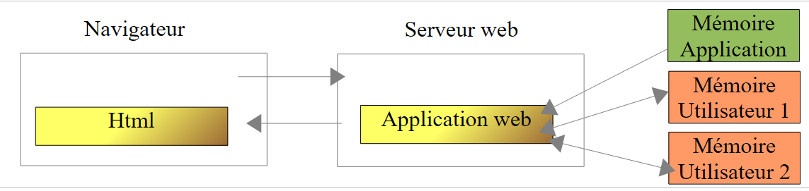
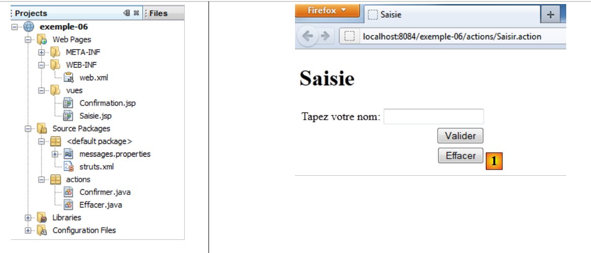
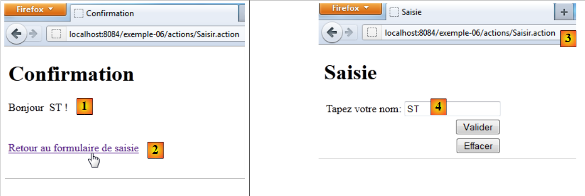

8. Example 06 – The Session
8.1. The concept of a session
When a client browser connects to a web application for the first time, it receives a session token, a unique string of characters that it sends back with every new request it makes to the web application. This allows the web application to recognize the client browser. The web application can then associate data with this session token. This data belongs to a single client browser. Thus, as the client browser makes requests, a memory is built up.
 |
As shown above, each user (browser) has its own memory, known as its session. This memory is shared by all requests from the same user. There is also a higher-level memory called the application memory. This memory is shared by all requests from all users. It is generally read-only.
8.2. The Netbeans project
 |
The [exemple-06] project is created by cloning the [exemple-05] project. We will change a few elements to
- take advantage of the user's session.
- add a new action [Effacer] [1] to clear the input field.
8.3. Configuration
The [struts.xml] file changes as follows:
<?xml version="1.0" encoding="UTF-8" ?>
<!DOCTYPE struts PUBLIC
"-//Apache Software Foundation//DTD Struts Configuration 2.0//EN"
"http://struts.apache.org/dtds/struts-2.0.dtd">
<struts>
<!-- internationalization -->
<constant name="struts.custom.i18n.resources" value="messages" />
<!-- default package -->
<package name="default" namespace="/" extends="struts-default">
<default-action-ref name="index" />
<action name="index">
<result type="redirectAction">
<param name="actionName">Saisir</param>
<param name="namespace">/actions</param>
</result>
</action>
</package>
<!-- equity package -->
<package name="actions" namespace="/actions" extends="struts-default">
<action name="Saisir">
<result name="success">/vues/Saisie.jsp</result>
</action>
<action name="Confirmer" class="actions.Confirmer">
<result name="success">/vues/Confirmation.jsp</result>
</action>
<action name="Effacer" class="actions.Effacer">
<result name="success">/vues/Saisie.jsp</result>
</action>
</package>
</struts>
Lines 27–29 define a new action [Effacer] associated with a class [Effacer]. The response to this action is the view [Saisie.jsp].
8.4. The action [Confirmer]
It evolves as follows:
package actions;
import com.opensymphony.xwork2.ActionSupport;
import java.util.Map;
import org.apache.struts2.interceptor.SessionAware;
public class Confirmer extends ActionSupport implements SessionAware{
// model
private String nom;
// session
private Map<String, Object> session;
// getters and setters
public String getNom() {
return nom;
}
public void setNom(String nom) {
this.nom = nom;
}
@Override
public void setSession(Map<String, Object> session) {
this.session=session;
}
@Override
public String execute(){
// put the name in the session
session.put("nom",nom);
// navigation
return SUCCESS;
}
}
- line 7: the class [Confirmer] implements the interface SessionAware. This interface has only one method, the method setSession on lines 25–27. Before the execute method is called, one of the request interceptors will inject, via the setSession method, the user’s session in the form of a Map<String, Object> dictionary (line 25). We choose to store this dictionary in the session field on line 12.
- Lines 30–34: the action’s execute method. When it runs, the session field has been initialized by one of the interceptors, and the name field by another interceptor. We use this session dictionary to store the name field. Thus, the name will be part of the user’s session and available for all of their requests.
8.5. The views [Confirmation.jsp] and [Saisie.jsp]
The view [Confirmation.jsp] remains unchanged. The view [Saisie.jsp] changes as follows:
<%@page contentType="text/html" pageEncoding="UTF-8"%>
<%@ taglib prefix="s" uri="/struts-tags" %>
<!DOCTYPE html>
<html>
<head>
<meta http-equiv="Content-Type" content="text/html; charset=UTF-8">
<title><s:text name="saisie.titre1"/></title>
</head>
<body>
<h1><s:text name="saisie.titre2"/></h1>
<s:form action="Confirmer">
<s:textfield key="saisie.libelle" name="nom" value="%{#attr['nom']}"/>
<s:submit key="saisie.valider" action="Confirmer"/>
<s:submit key="saisie.effacer" action="Effacer"/>
</s:form>
</body>
</html>
- Line 12: We add a "value" attribute to the <s:textfield> tag. This attribute sets the value to be displayed in the input field. If this attribute is omitted, the value defaults to name. Here, the value of the attribute is a OGNL expression (Object-Graph Navigation Language) of the form %{expression_à_évaluer}. Here, the expression to be evaluated is #attr['nom']. The name attribute will be searched for in the current action, page, request, session, and application, in that order. Since the action [Confirmer] sets the name attribute in the session, it will be found there. This is shown by the following request:
 |
In [1], the name entered was ST. We know that the action [Confirmer] placed this name in the session. The link [2] leads us to Url and [3]. The view [Saisie.jsp] is displayed. For the input field, the attribute %{#attr['nom']} retrieves the name from the session.
- Line 14: the [Effacer] button, which triggers the execution of the [Effacer] action and the display of the [Saisie.jsp] view
<action name="Effacer" class="actions.Effacer">
<result name="success">/vues/Saisie.jsp</result>
</action>
8.6. The action [Effacer]
The code for action [Effacer] is as follows:
package actions;
import com.opensymphony.xwork2.ActionSupport;
import java.util.Map;
import org.apache.struts2.interceptor.SessionAware;
public class Effacer extends ActionSupport implements SessionAware{
// session
private Map<String, Object> session;
@Override
public String execute(){
// retrieve the name from the session
String nom=(String)session.get("nom");
// remove it from the session if necessary
if(nom!=null){
session.remove("nom");
}
// navigation
return SUCCESS;
}
@Override
public void setSession(Map<String, Object> map) {
this.session=map;
}
}
- Line 7: The [Effacer] class implements the [SessionAware] interface, just as the [Confirmer] action did.
- line 13: the [Effacer] action must clear the contents of the name input field in the [Saisie.jsp] view. We know that this view retrieves this name from the session. We must therefore remove the name from the session. This is what the execute method does.
Let’s see what happens:
 |
In [1], we want to clear the input field. We click the [Effacer] button.
<s:submit key="saisie.effacer" action="Effacer"/>
The action [Effacer] will be executed. In [2], we notice that the Url called was that of the [Confirmer] action. This comes from the <s:form> tag in the form:
<s:form action="Confirmer">
which causes the form to be submitted to the action [Confirmer]. When the [Effacer] button is clicked, the parameter
action:Delete=Delete
was posted to the Url [/actions/Confirmer.action] action. Struts uses this parameter to have the posted data processed by the [Effacer] action. This action removes the session name. The page [Saisie.jsp] is the response from the action [Effacer]:
<action name="Effacer" class="actions.Effacer">
<result name="success">/vues/Saisie.jsp</result>
</action>
This page, which displays the session name, then displays an empty string: [3].
We have written several simple examples to introduce important concepts of Struts 2:
- page internationalization
- injection of posted parameters into action fields
- the concept of sessions
- the relationship between Actions and Views
Now that we have mastered these concepts, we are ready to tackle more complex examples. We’ll start by introducing the various tags that can be used in a form.